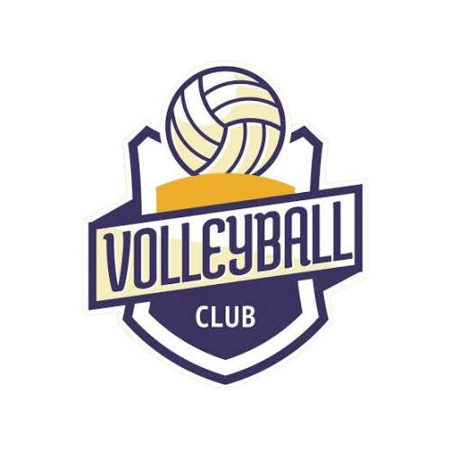

Volleyball Services
Training Programs
Individual Skill Development
Personalized coaching sessions
Video analysis breakdown
Strength and conditioning plans
Team Training Packages
Group strategy sessions
Pre-season conditioning programs
Game simulation workshops
Equipment Services
Gear Rental
Professional-grade volleyballs
Portable net systems
Training aids (reaction balls, target nets)
Equipment Maintenance
Net tension adjustments
Ball pressure checks
Antenna replacement
Court Facilities
Indoor Court Booking
Features:
Olympic-standard flooring
Professional lighting system
Scoreboard access
Beach Volleyball Courts
Regulation sand depth
Shower facilities
Equipment storage
Coaching Services
Certified Coaches
FIVB-certified instructors
Position-specific training
Game strategy development
Referee Certification
Rulebook workshops
Match officiating practice
Certification exams
Contact Our Team
Email: JohnBenedictManzanilla@gmail.com
Phone: 0949-7473-818
Volleyball Services HQ
456 Sports Avenue
Court City, CA 65432
© 2025 Volleyball Services. All rights reserved.
